Rybníky a tůně
Výstavba, opravy, odbahnění a revitalizace rybníků a vodních ploch
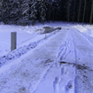
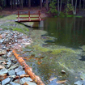
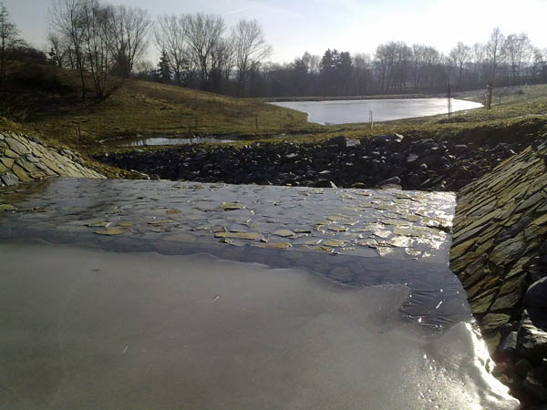
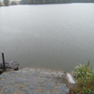
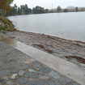
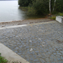
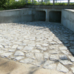
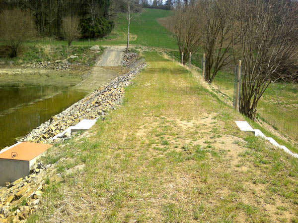
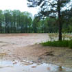
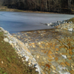
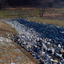
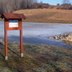
- Revitalizace krajiny v k.ú. Lešov
- Výstavba rybníka v k.ú. Pohleď
- Výstavba nových rybníků v k.ú. Dobrohošť
- Záchytné jezírko pro areál firmy Quaprotek Manufacturing k.s.
- Výstavba rybníka v k.ú. Dubovice
- Obnova rybníků Dolní, Střední, Horní Mrázový v k.ú. Hrobská Zhrádka
- Revitalizace území „U Řečice"
- Oprava a odbahnění „Vlčetineckého" rybníka
- Oprava a odbahnění rybníka Horní Roudný, k.ú. Dmýštice
- Výstavba rybníka na parcele v k.ú. Buk
- Výstavba rybníků a tůní v k.ú. Chyšná
- Výstavba rybníků v k.ú. Vlasenice
- Rozšíření soustavy rybníků v k.ú. Dobrá Voda
- Výstavba dvou rybníků v k.ú. Matějovec
- Oprava a odbahnění rybníka Nový mlýn v k.ú. Zadní Lomná
- Oprava a odbahnění Branského rybníka
- Výstavba soustavy vodních nádrží „Pod Pacovskou Horou"
- Výstavba rybníků v k.ú. Lhota u Kamenice nad Lipou
- Oprava a odbahnění rybníka „Bílý"
- Výstavba rybníků v k.ú. Hadravova Rosička
- Výstavba rybníka v k.ú. Budíkov
- Výstavba rybníka „Pod Skalkou" v k.ú. Skalka u Nové Bystřice
Sádky pro chov ryb
Projekty rybích sádek, líhní a chovných areálů
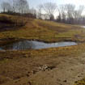
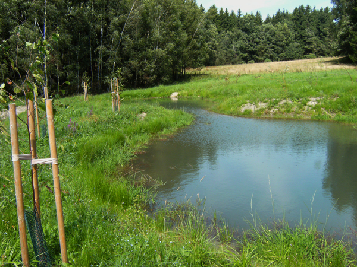
- Rybí sádky na parcele v k.ú. Pravíkov
- Rozšíření sádek a rybí líheň v k.ú. Pravíkov
- Rozšíření areálu sádek v k.ú. Žďár nad Sázavou
- Pasport Sádky Kardašova Řečice
Kanalizace a vodovody
Projekty kanalizačních sítí, vodovodů a souvisejících ČOV
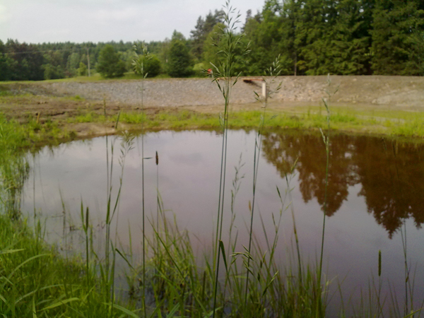
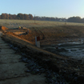
- Rozšíření kanalizace — Rodínov
- Rozšíření průmyslové zóny v k.ú. Velká Bíteš — vodovod, splašková a dešťová kanalizace
- Kanalizace a vodovod k.ú. Kouty — dodatečné povolení
- Kanalizace a ČOV Pístina
- Výstavba kanalizace a ČOV Kamenná Lhota
Základní technická vybavenost
Vodovody a kanalizace pro rozvojové lokality a novou zástavbu
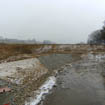
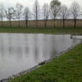
- Rozšíření kanalizace a vodovodu pro ZTV v k.ú. Kožlí
- Rozšíření ZTV pro RD Vokov
- ZTV pro 9 RD Senožaty — vodovod a kanalizace
- ZTV v obci Bojiště — kanalizace a vodovod
- ZTV lokalita „U Starého mlýna" Praha 10 — Královice
- ZTV Kejžlice — „V Drahách"
Skládky
Provozní řády uzavřených skládek
- Provozní řád uzavřené skládky S-IO v k.ú. Černovice u Tábora
- Provozní řád uzavřené skládky S-OO v k.ú. Černovice u Tábora
Čistírny odpadních vod
Domovní ČOV pro rodinné domy v obcích bez kanalizace
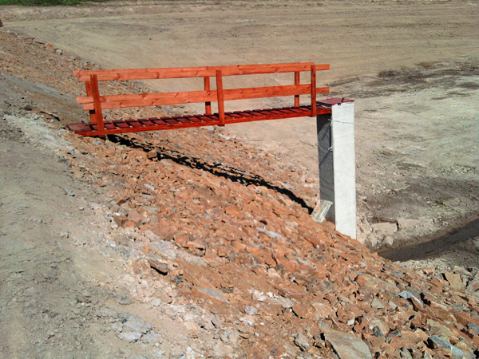
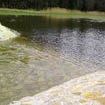
- Domovní ČOV pro RD ve Vokově
- Domovní ČOV pro RD v Častrově
- Domovní ČOV pro RD v Benátkách
- Domovní ČOV pro RD v Zajíčkově
- Domovní ČOV pro RD v Bácovicích
- Domovní ČOV pro RD ve Starých Bříštích
- Domovní ČOV pro RD v Proseči pod Křemešníkem
Manipulační řády
Manipulační a provozní řády vodních děl
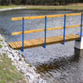
- Manipulační řád rybník Humpolec
- Manipulační a provozní řád — Rybník v k.ú. Horní Rápotice
- Soustava vodních ploch v k.ú. Řečice u Humpolce — manipulační a provozní řád
- Manipulační a provozní řád rybník Bobeš v k.ú. Chválkov
Pasporty rybníků
Odborné pasporty vodních děl a rybníků
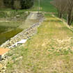
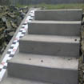
- Rybník k.ú. Dívčí Kopy — Pasport
- Rybník Lipno v k.ú. Hadravova Rosička — Pasport
- Rybník v k.ú. Děbolín — Pasport
- Rybník v k.ú. Velký Ratmírov — Pasport
- Rybník v k.ú. Lodhéřov — Pasport
- Rybník v k.ú. Studnice — Pasport
- Rybník v k.ú. Horní Němčice — Pasport